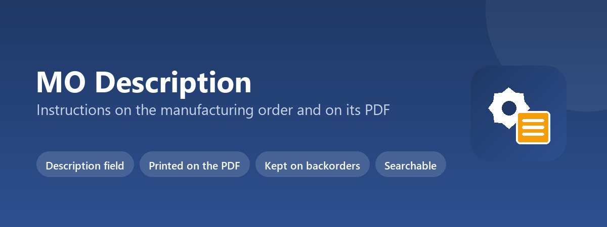

Adds a description to every manufacturing order and prints it on the production order PDF for the shop floor.
Type print details, packing instructions or customer remarks in the Description field of a manufacturing order. They are printed on the production order, right under the product, so the people making it read them first. Nothing else changes in the way you manufacture.
📝 Description on the orderA free-text Description field on the manufacturing order, just below the bill of materials. |
🖨 Printed for the floorThe production order PDF prints the description right under the product, with your line breaks kept. |
📑 Copied with the orderDuplicating a manufacturing order keeps its description, and so does a backorder. |
🔍 Easy to findSearch manufacturing orders by a word of their description. |
Odoo 18.0 • Community & Enterprise • depends on Manufacturing • Licence LGPL-3
Odoo implementation and development. thecodelegion.com